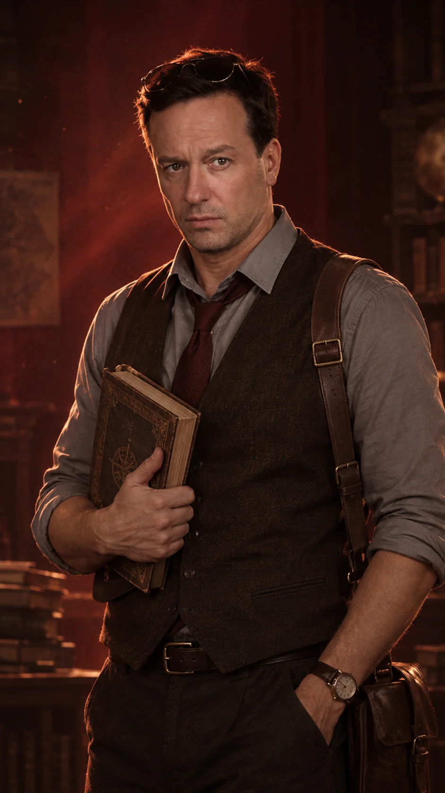
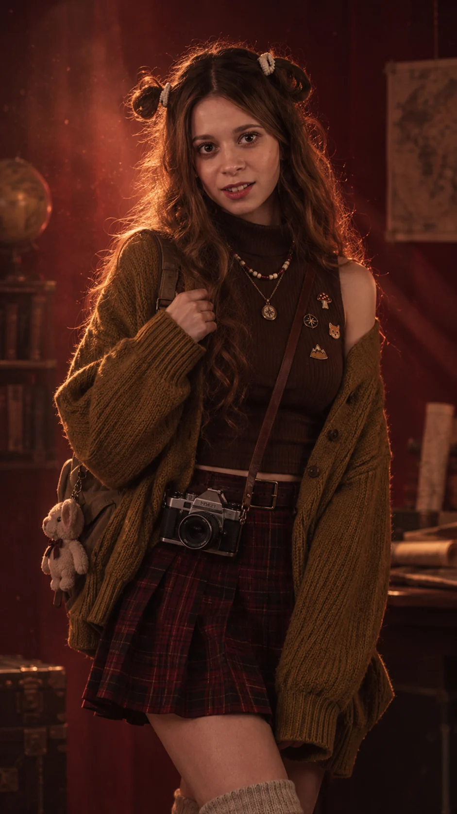
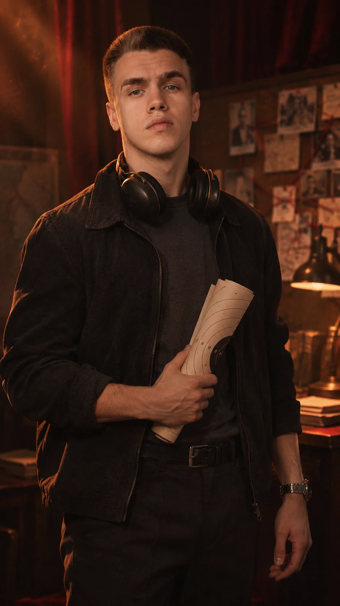

Исчезновение
Профессор истории Александр Вельский пропадает без следа. Официальная версия ничего не объясняет. Его дочь, капитан ФСБ Алиса Вельская, начинает собственное расследование.
Без спойлеров: только то, что известно в первые минуты фильма.
Профессор истории Александр Вельский пропадает без следа. Официальная версия ничего не объясняет. Его дочь, капитан ФСБ Алиса Вельская, начинает собственное расследование.
Мир хранит предметы, о которых не пишут в учебниках. Их называют Наследиями. Одни прячут их веками, другие охотятся за ними, не считаясь с ценой.
Благотворители, хранители архивов, закрытые клубы. За разрозненными именами стоит одна цепь приказа. Багровый Орден пережил государства и войны, потому что научился прятать власть.
Маршрут профессора проходит через настоящие города, музеи и монастыри. Пройти его можно в фильме, в игре и самому, приехав туда, где была Алиса.
Те, с кем вы встретитесь в истории.



